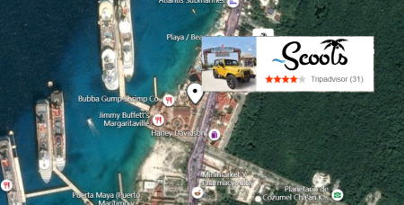
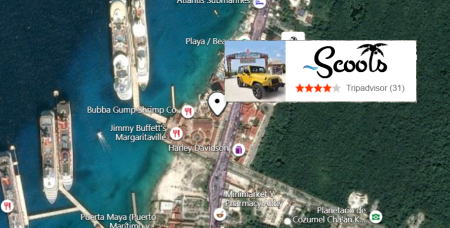

Site Purpose
~Scoots is a fictitious motor scooter rental company located on the island of Cozumel off the coast of Mexico in the western Caribbean Sea. This owner-operator company caters to locals, walk-in tourists, enthusiasts, and cruise-based touring groups and partnerships. The company promotes friendly and easy to rent services of motor scooters, jeeps, and side-by-sides ATVs.
 

The company has two physical rental locations on Cozumel. One is near the Playa del Carmen-Cozumel Ferry dock in el Centro de Cozumel and the other is near the Terminal Puerta Maya further south along the coast which caters to the cruise lines and patrons.